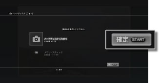

ネットワーク > アップロード／ダウンロードする
アップロード／ダウンロードする
ハードディスクや記録メディアに保存されたコンテンツをインターネット上にアップロードしたり、インターネット上のコンテンツをハードディスクや記録メディアにダウンロードしたりできます。
アップロードする
アップロード機能があるWebページから操作します。アップロードの手順は、Webページによって異なります。
ヒント
- ハードディスクからアップロードできるのは、
 （フォト）に保存されたコンテンツに限られます。
（フォト）に保存されたコンテンツに限られます。 - お使いのPS3™によっては、記録メディアを使うときに別売りのUSBアダプターなどが必要になる場合があります。
ダウンロードする
1. |
Webページからダウンロードしたいコンテンツを選ぶ。 |
|---|---|
2. |
保存先を選び、STARTボタンを押す。  |
ヒント
- コンテンツによっては、保存先が決まっているものがあります。
- PS3™で再生できないコンテンツは、記録メディアにだけ保存できます。
- お使いのPS3™によっては、記録メディアを使うときに別売りのUSBアダプターなどが必要になる場合があります。
- ファイルサイズの大きいデータや複数のデータをダウンロードするときに、ダウンロードしながら他の操作をすることができます。詳しくは、
 （ネットワーク） ＞
（ネットワーク） ＞ （ダウンロード管理）＞［バックグラウンドダウンロードをする］をご覧ください。
（ダウンロード管理）＞［バックグラウンドダウンロードをする］をご覧ください。